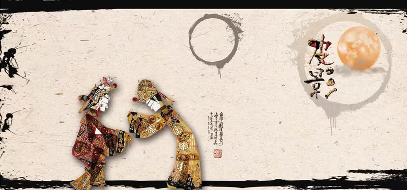
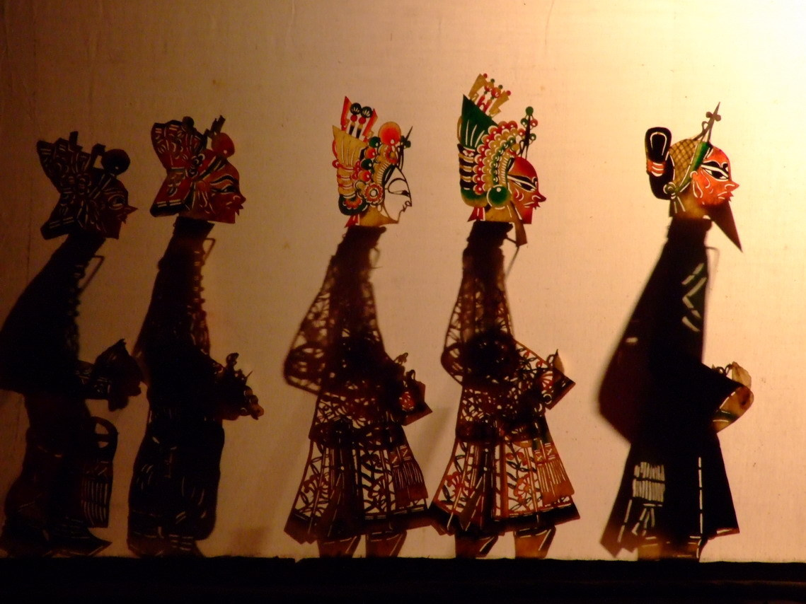
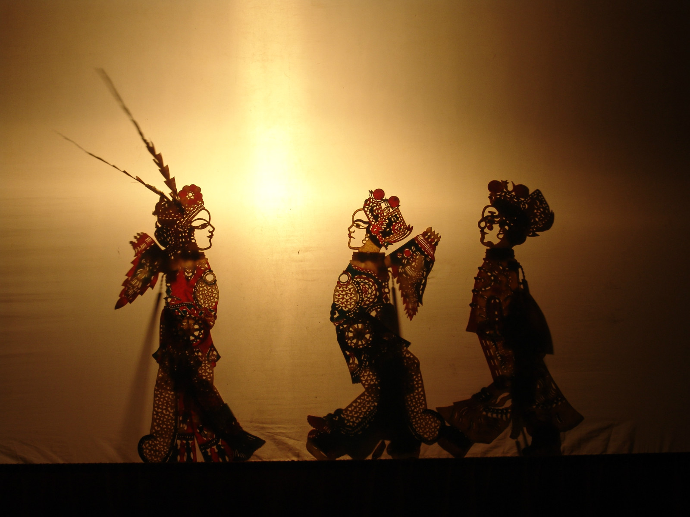

皮影戏（Shadow Puppets），又称“影子戏”或“灯影戏”，是一种以兽皮或纸板做成的人物剪影以表演故事的民间戏剧。表演时，艺人们在白色幕布后面，一边操纵影人，一边用当地流行的曲调讲述故事，同时配以打击乐器和弦乐，有浓厚的乡土气息。其流行范围极为广泛，并因各地所演的声腔不同而形成多种多样的皮影戏。 皮影戏是中国民间古老的传统艺术，老北京人都叫它“驴皮影”。据史书记载，皮影戏始于西汉，兴于唐朝，盛于清代，元代时期传至西亚和欧洲，可谓历史悠久，源远流长。

皮影戏从有文字记载，已经有2000多年的历史，汉武帝爱妃李夫人染疾故去了，武帝的思念心切神情恍惚，终日不理朝政。大臣李少翁一日出门，路遇孩童手拿布娃娃玩耍，影子倒映于地栩栩如生。李少翁心中一动，用棉帛裁成李夫人影像，涂上色彩，并在手脚处装上木杆。入夜围方帷，张灯烛，恭请皇帝端坐帐中观看。武帝看罢龙颜大悦，就此爱不释手。这个载入《汉书》的爱情故事，被认为是皮影戏最早的渊源。
传承千年文化，感受中华魂魄-皮影戏